Camino a la GICSP — Cap. 1: Mi primer PLC casero (ESP32 + OpenPLC)
09-07-2026
Hace unos tres años que estoy dentro del mundo de la ciberseguridad, primero como estudiante y después como profesional. Durante este tiempo he ido aprendiendo fundamentos de redes, sistemas, protocolos, programación, scripting y un largo etcétera de habilidades y conocimientos. Pero en realidad, mi deriva hacia la ciberseguridad empezó como una simple curiosidad profesional. Antes de esto, había trabajado como técnico electricista en sectores muy distintos —industrial, civil e incluso naval— y en todos ellos siempre había un componente, aunque pequeño, relacionado con la informática. Lo que empezó como una forma de ganar autonomía frente a lo que no sabía, pronto se convirtió en un interés genuino por descubrir todo lo que aquel nuevo mundo tenía para ofrecerme.
Durante el último año he estado casi enteramente centrado en IT: me saqué la certificación eJPT, terminé el penúltimo curso de DAW —a falta de dos asignaturas para acabarlo— y hace poco entré en mi primer trabajo de ciberseguridad como técnico de sistemas. Conocer el sector desde dentro me ha ayudado a entender mi sitio y mi rol. Y tras darle muchas vueltas, he llegado a una conclusión: mi perfil híbrido —informático y electricista— no es nada despreciable. Uno no sustituye al otro; existe entre ambos una sinergia muy interesante.
Por eso, mi siguiente paso natural es juntar estos dos mundos, y no se me ocurre mejor forma de hacerlo que especializándome en ciberseguridad industrial. Ahí es donde entra el GICSP: quiero estudiarlo a fondo, pero antes de sumergirme en la teoría, sentía que me faltaba dar un buen repaso práctico a los sistemas industriales.
>> El GICSP (Global Industrial Cyber Security Professional) es una certificación de GIAC enfocada en la seguridad de sistemas de control industrial (ICS) y tecnología operacional (OT). A diferencia de la mayoría de certificaciones de ciberseguridad, centradas en el mundo IT, el GICSP nace para cubrir un terreno distinto: el de las plantas industriales, donde conviven PLCs, SCADA, sensores y redes que no siempre siguen las mismas reglas que un entorno IT tradicional.
Por eso está pensada precisamente para un perfil híbrido: no basta con saber de ciberseguridad, también hay que entender cómo funcionan físicamente estos sistemas —ingeniería, automatización, protocolos industriales— porque en OT un fallo no solo compromete datos, puede comprometer procesos físicos, maquinaria o incluso la seguridad de las personas. Y ahí es donde he sentido que mi camino, aunque no lo buscara conscientemente, empezaba a tener sentido: la intersección entre IT y OT que certifica el GICSP es, en el fondo, la misma que llevo encima desde antes incluso de saber que existía la ciberseguridad industrial.
Así que, como forma de aprendizaje hands-on antes de empezar con el estudio formal del GICSP, decidí montar un pequeño laboratorio casero: convertir un ESP32 en un PLC para entender, de primera mano, cómo piensa y se comporta un sistema de control industrial.
En este primer blog, explicaré cómo escribí el primer programa sencillo en lenguaje ladder desde OpenPLC Editor y lo subí al ESP32.
Entendiendo OpenPLC
Basta con decir, por ahora, que OpenPLC es un software open source, gratuito -"god bless open source!"- que nos permite programar PLCs. Aparte, por si fuera poco eso, nos permite compilar programas en los diferentes lenguajes de programación de PLCs contemplados en el IEC 61131-3 en un ESP32 con previa instalación de una librería. En este caso, lo que hace OpenPLC es instalar en nuestro ESP32 un servidor llamado OpenPLC Runtime que ejecutará el programa previamente programado de manera cíclica.
Desde su página web podéis descargar el software: OpenPLC
Manos a la obra
Bien, una vez introducido el software vamos manos a la obra. Lo primero que hice fue configurar la placa de desarrollo dentro de OpenPLC.
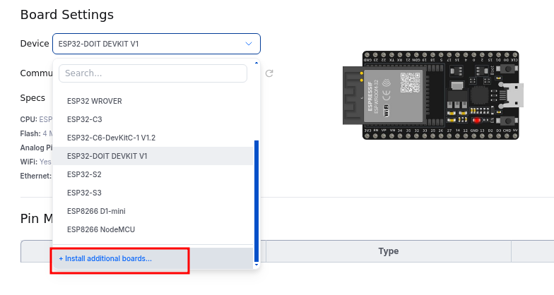
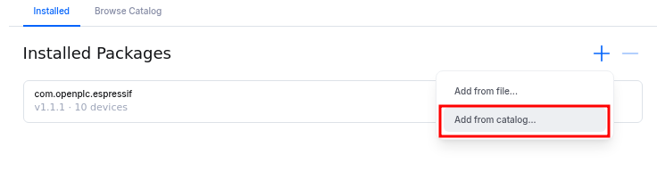
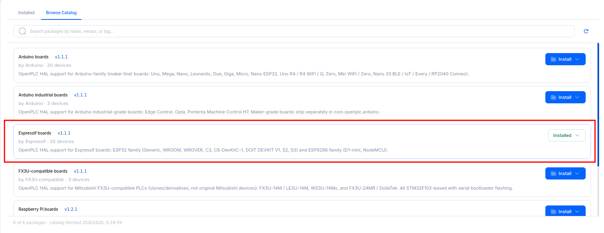
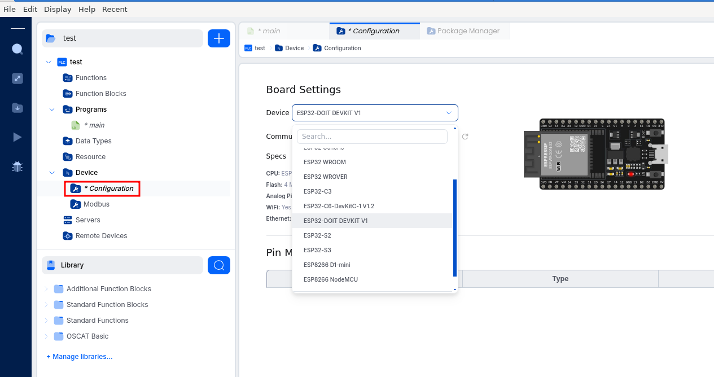
Una vez encontrado el modelo de placa, conecté el ESP32 al PC. En mi caso, al trabajar con un S.O. Debian y un CP2102 como conversor USB a UART integrado en el ESP32, no necesité la instalación de drivers, ya que Debian los tiene de forma nativa.
>> En algunos ESP32 el conversor es un chip CH340, en cuyo caso sí se necesitan drivers.Se pueden encontrar en el siguiente link: SunFounder
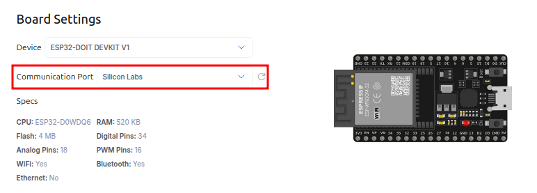
La idea era realizar un programa en el lenguaje ladder lo más simple posible, así que opté por hacer uno que consistiera en un par de botones, uno de marcha y otro de paro, y un led que respondiera a ellos. Más simple imposible.
A continuación establecí los pines que iba a utilizar; en mi caso fueron los siguientes:
- Pin 32: Botón de marcha | Digital Input | %IX0.0
- Pin 33: Botón de paro | Digital Input | %IX0.1
- Pin 25: Salida al led | Digital Output | %QX0.0
Este pineado lo trasladé a OpenPLC de la siguiente manera:
Una vez hecho el pineado, comencé a "escribir" el programa en ladder. Para ello creé un nuevo "rung".
Añadí los contactos desde el panel lateral de OpenPLC Editor:
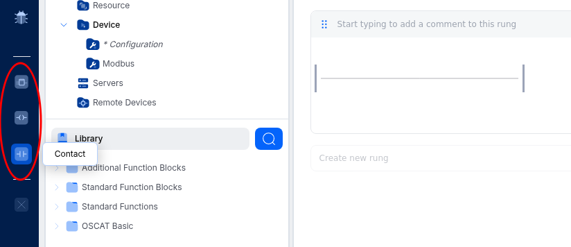
El programa era muy sencillo: consistía en dos contactos en serie que representan lógicamente los botones de marcha y paro, y a continuación una bobina que representaba el led. A dicha bobina se le realizó un enclavamiento para que el pulsador de marcha actuara como un interruptor; esto se realizó simplemente con un tercer contacto que tenía el mismo nombre que la carga y que estaba en paralelo junto al contacto de marcha.
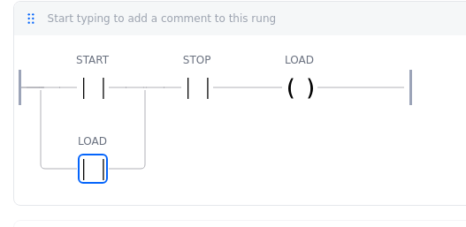
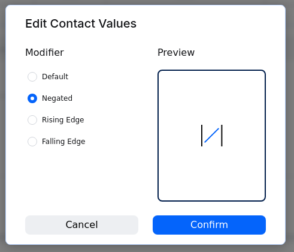
Una vez creado el programa establecí las variables:
- START | INPUT | BOOL | %IX0.0 | 0
- STOP | INPUT | BOOL | %IX0.1 | 0
- LOAD | OUTPUT | BOOL | %QX0.0 | 0
Que trasladé a OpenPLC de la siguiente manera:
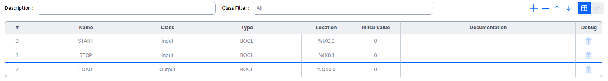
Una vez había terminado el programa era hora de descargarlo en el ESP32:
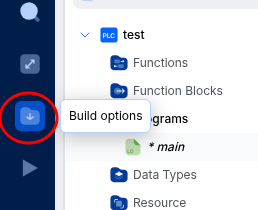
Pero me dio error, demasiado fácil estaba siendo:
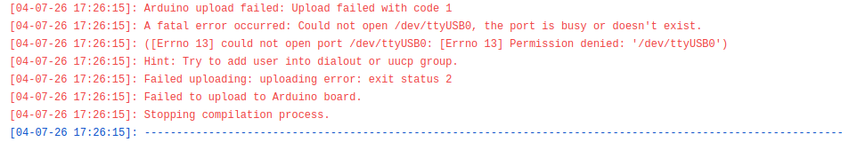
sudo usermod -a -G dialout enroot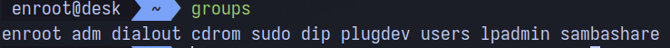
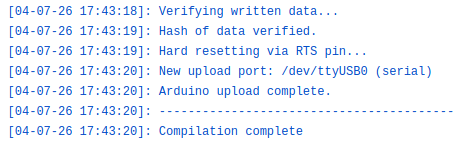
Y hasta aquí esta fase del proyecto; en la fase número 2 mostraré cómo diseñé el circuito y cableé el ESP32 en una breadboard. Espero que quien se haya tomado la molestia de haber llegado hasta aquí haya disfrutada tanto leyendo como yo haciendo el proyecto. ¡Nos vemos a la próxima!
EnRoot